练习13.4(1) · 1
- 根据表 13-1 中所调查的 60 名学生的每周运动时间 (单位: ),制作频率分布表, 并绘制频率分布直方图.
答案与解析收起 / 展开
- 略.
教师整合版 / 沪教版高中数学
必修第三册
第13章统计 · 保留教材主线与原题
教材与正式教参整合
上一节我们学习了如何通过随机抽样获取数据. 然而所收集的数据往往庞杂凌乱，无法直接从中获得有用的结论. 统计图表是表达和分析数据的一种重要工具, 它不仅可以帮助我们从数据中获取有用的信息, 还可以帮助我们直观、准确地理解相关的结果.
在初中阶段我们已经学习了扇形统计图、折线统计图和条形统计图等, 这一节我们将通过实例进一步对统计图表的特点和选择加以讨论, 并在此基础上学习其他统计图表.
A 校高一年级共有学生 330 名, 为了解该校高一年级学生的身高和体重情况，学校决定做一次抽样调查. 按照性别分层随机抽样的方法抽取 66 名学生, 测量他们的身高 (单位: ) 及体重 (单位: ) 并记录在表 13-2 中.
表 13-2 A 校 66 名高一年级学生身高、体重数据
| 性别 | 身高/cm | 体重/kg | 性别 | 身高/cm | 体重/kg | 性别 | 身高/cm | 体重/kg |
| 女 | 152 | 46 | 女 | 164 | 52 | 男 | 172 | 92 |
| 女 | 153 | 47 | 男 | 165 | 54 | 男 | 172 | 64 |
| 女 | 154 | 63 | 男 | 165 | 60 | 女 | 172 | 69 |
| 女 | 155 | 50 | 男 | 165 | 48 | 男 | 173 | 75 |
| 女 | 156 | 48 | 女 | 165 | 51 | 男 | 173 | 72 |
| 女 | 156 | 50 | 女 | 165 | 55 | 男 | 174 | 55 |
| 女 | 156 | 51 | 女 | 165 | 58 | 男 | 174 | 56 |
| 女 | 157 | 51 | 女 | 166 | 63 | 男 | 174 | 63 |
| 女 | 157 | 50 | 男 | 166 | 64 | 男 | 174 | 74 |
| 女 | 159 | 49 | 男 | 167 | 54 | 男 | 175 | 53 |
| 女 | 159 | 51 | 男 | 167 | 52 | 男 | 176 | 64 |
| 女 | 160 | 47 | 男 | 167 | 53 | 男 | 176 | 60 |
| 女 | 160 | 62 | 女 | 167 | 69 | 男 | 177 | 63 |
| 女 | 160 | 50 | 女 | 167 | 61 | 男 | 177 | 75 |
| 女 | 160 | 63 | 男 | 168 | 97 | 男 | 178 | 62 |
| 女 | 161 | 53 | 女 | 168 | 60 | 男 | 178 | 60 |
| 女 | 162 | 84 | 女 | 168 | 44 | 男 | 178 | 73 |
| 女 | 163 | 66 | 男 | 170 | 53 | 男 | 178 | 68 |
| 女 | 163 | 53 | 男 | 170 | 54 | 男 | 179 | 78 |
| 女 | 164 | 63 | 男 | 170 | 57 | 男 | 181 | 80 |
| 女 | 164 | 68 | 男 | 170 | 47 | 男 | 182 | 92 |
| 女 | 164 | 52 | 男 | 170 | 69 | 男 | 184 | 78 |
该表虽给出了 66 名学生的身高和体重的数据, 但从中却很难看出学生的身高和体重的分布情况. 在初中我们初步了解了用频数分布表和频数分布直方图来展现数据分布在各组的个数, 而要想知道各个小组的数据在样本容量中所占比例的大小, 则可采用下面将要学习的频率分布表和频率分布直方图. 它们清晰地呈现了样本数据的整体频率分布情况.
我们不妨以身高为例, 先绘制身高频率分布表. 其步骤如下:
(1)求极差
(2)确定组距与组数
组距是指每个小组的区间端点之间的距离, 组距的选取决定了组数的多少:
如果组数太少, 所有数据就会落在少数几个组里, 导致这几个组的柱形太高; 如果组数太多, 大部分的组中只有少数的数据或者没有数据, 均无法有效呈现数据的分布.
一般地, 第一组的下限应低于最小值, 最后一组的上限应高于最大值. 这里最大值为 184 , 最小值为 152 , 可取所有样本数据均在区间 内. 极差为 32,我们取组距为 3,将区间 分为 11 组. 通常对组内数值所在区间取左闭右开区间，最后一组取闭区间，于是将样本数据分为如下 11 组: [151.5,154.5)、[154.5,157.5)、...、[181.5,184.5].
(3)统计每组的频数及频率
(4)绘制频率分布表
将分组、频数及频率填入表 13-3. 如果想知道身高不高于 160 cm 的学生人数，那么需要将 [151.5, 154.5)、[154.5, 157.5) 及[157.5,160.5)的频数相加, 求其累积频数, 为 15 人.
当数据在 120 个以内时, 通常按数据的多少分为 5 ~ 12 组.
表 校 66 名高一年级学生身高的频率分布表
| 身高分组区间 | 频数 | 频率 | 累积频数 |
| [151.5,154.5) | 3 | 0.05 | 3 |
| [154.5,157.5) | 6 | 0.09 | 9 |
| [157.5,160.5) | 6 | 0.09 | 15 |
| [160.5,163.5) | 4 | 0.06 | 19 |
| [163.5,166.5) | 11 | 0.17 | 30 |
| [166.5,169.5) | 9 | 0.14 | 39 |
| [169.5,172.5) | 8 | 0.12 | 47 |
| [172.5,175.5) | 7 | 0.11 | 54 |
| [175.5,178.5) | 8 | 0.12 | 62 |
| [178.5,181.5) | 2 | 0.03 | 64 |
| [181.5,184.5] | 2 | 0.03 | 66 |
与先前看起来毫无规律的数据相比, 表 13-3 清晰地给出了每组数据是如何分布的. 我们可以一目了然地看出在每个身高范围内有多少名学生:身高在 到 之间的学生人数最多，在 166.5 cm 到 169.5 cm 之间的学生人数次之，而在 178.5 cm到 、 到 之间的学生人数最少.
依据上述频率分布表, 我们就可以来制作频率分布直方图 (frequency distribution histogram). 为此, 我们在直角坐标系中把横轴分成若干段, 每一段对应一个组距, 然后以组距形成的线段为底作一矩形, 矩形的高为小组的组距 , 就得到如图 13-4-1 所示的频率分布直方图.
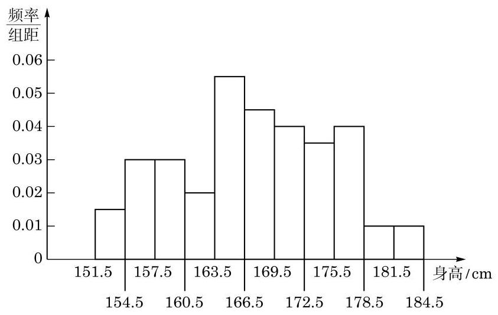
图 13-4-1 A 校 66 名高一年级学生身高的频率分布直方图
统计频数时可以直接写数，也可以画 “正”字.
在绘制统计图时还应注意以下几点:
(1)标题:统计图一般要有标题，用以说明统计图的内容. 如果可能的话, 列出数据来源.
(2)坐标的刻度和名称:一般纵轴和横轴也需要有名称，纵轴应清楚地标明刻度, 横轴应标明类别或刻度.
(3)标注:如果要在一张图中呈现多元数据，应使用一些标注来识别单个数据.
容易看出,小矩形的面积 组距 组距 频率. 也就是说, 在频率分布直方图中, 数据落在各小组内的频率可以用小矩形的面积来表示，这些面积的总和为 1 .
频率分布直方图比频率分布表更能直观形象地反映样本数据的分布规律. 从图 13-4-1 中我们可以看出, 身高在 163.5 cm 到 166.5 cm 这个范围内的学生人数最多，特别高或特别矮的学生都很少.
在绘制频率分布折线图时, 虽然在两侧各加了一个虚设的附加组, 但由于这两个组的频率都是零, 不会对统计的结果造成影响.
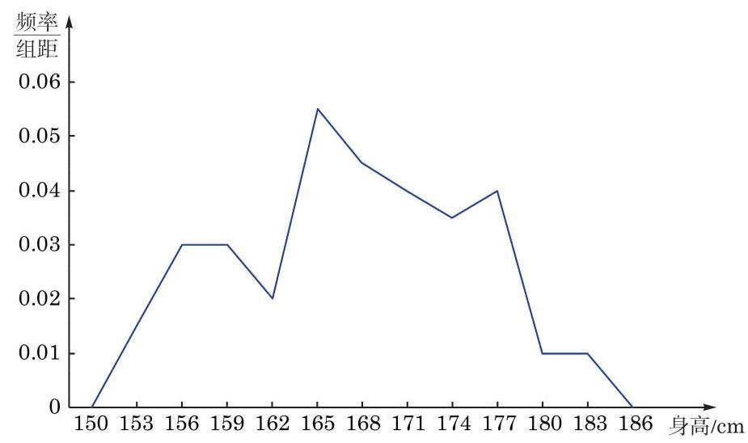
图 13-4-2 A 校 66 名高一年级学生身高的频率分布折线图
如果样本容量足够大, 且分组的组距取得足够小, 那么频率分布折线图将趋于一条光滑的曲线 (图 13-4-3).
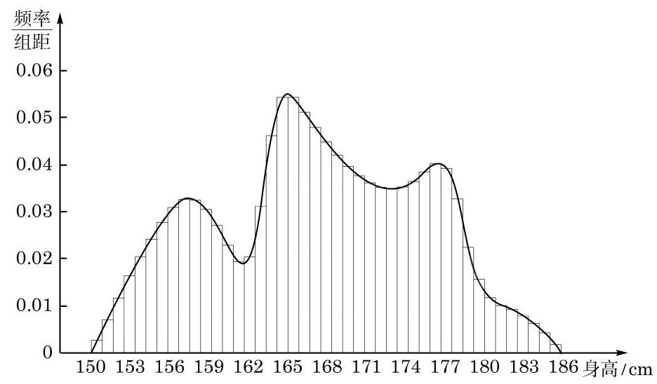
图 13-4-3
| 体重分组 | 频数 | 频率 |
| [44,52) | 16 | 0.24 |
| 16 | 0.24 | |
| [60,68) | 17 | 0.26 |
| [68,76) | 10 | 0.15 |
| [76,84) | 3 | 0.05 |
| [84,92) | 1 | 0.02 |
| [92,100] | 3 | 0.05 |
绘制频率分布直方图如下:
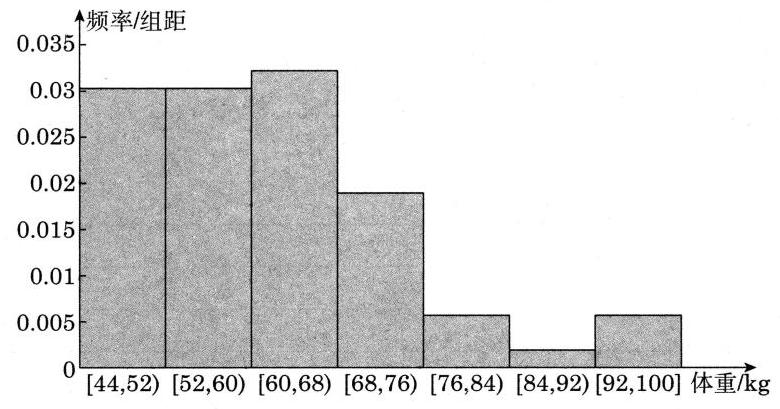
图 13-R1
频率分布直方图并不是展示数据分布的唯一选择. 在数据不多的情况下, 我们可以绘制茎叶图 (stem-and-leaf plot), 展示所有样本数据的信息.
例如,某个品种的小麦麦穗长度 (单位: ) 的样本数据如下所示, 如何分析该品种小麦的麦穗长度的分布情况呢?
10.2 9.7 7.8 10.0 9.1 8.9 8.6
9.8 9.6 9.7 11.2 10.6 11.7
在上述问题中, 我们将样本数据分为茎和叶两个部分: 整数部分作为“茎”，小数作为“叶”. 对于第一个麦穗长度数据 10.2 来说, 10 是茎, 2 则是叶. 然后把 “茎”由小到大、从上往下写成一列, 并在其左边或右边画一条竖直的线 (不妨画在右边). 最后把 “叶”写在它所属的“茎”的右边，由小到大排成一行. 这样就得到该品种麦穗长度的茎叶图(图 13-4-4).
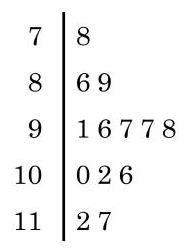
图 13-4-4
解读茎叶图和解读直方图一样, 要注意整体形态. 从这张图可以直观地看出该品种的麦穗的长度主要集中在 之间, 并且分布比较对称.
茎叶图既可以用于呈现单组数据, 也可以用于对两组同类数据的比较分析.
例 1 根据表 13-2 中的数据, 分别绘制女生和男生的体重分布茎叶图, 并比较女生和男生的体重分布.
解 因为表 13-2 中的数据不是很多, 而且学生的体重都是两位数, 所以可以比较方便地绘制茎叶图. 我们把表示体重的两位数的十位数字作为“茎”，从小到大排列在中间，男女生体重的个位数字作为 “叶” 分列在两边，以便于比较，就得到下面的茎叶图(图 13-4-5): 9
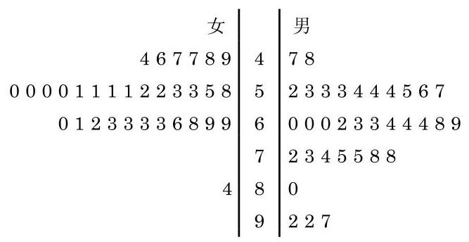
图 13-4-5 A 校 66 名高一年级学生体重的茎叶图
在图 13-4-5 中,“茎”为 4 的男生有体重为 和 两位, “叶”中就有 7、8 两个数字, 其余类同.
从图中可以看出, 女生的体重整体上低于男生的体重. 此外，女生的体重分布集中程度较高，男生的体重分布相对分散一些.
用茎叶图展示数据的优点在于所有信息都可以从茎叶图中得到, 由茎叶图也很容易制作相应的频率分布表和频率分布直方图.
直方图如何分组没有绝对的标准, 但茎叶图的分组却要加以注意. “茎”视实际需要可以是任何位数, 而“叶”只能是一位数. 当数据的位数较多时, 选择“茎”以后，“叶” 也可以通过四舍五入取值.
仍以本节开始的 A 校 66 名高一年级学生为例, 表 13-2 中学生的每一个身高值都对应一个体重值. 经验认为, 人的体重和身高有一定的相关性, 身材较高的人往往体重也较重, 对于高一年级学生群体, 客观数据是否支持这种说法呢? 从表 13-2 中我们无法直观地看出. 为了清楚地看到这一点, 可以绘制散点图.
我们把表 13-2 中学生的身高作为横坐标, 体重作为纵坐标, 在直角坐标系中绘制出相应的点, 就得到了身高和体重的散点图 (图 13-4-6).
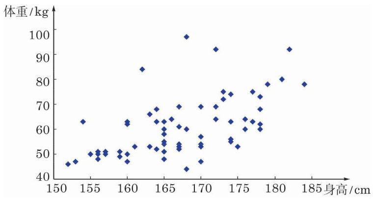
图 13-4-6 A 校 66 名高一年级学生身高、体重散点图
从图 13-4-6 中可以直观地看出, 图中的点从左至右大致是逐渐上升的, 也就是说, “身材较高的人, 体重往往也较重”这一说法在高一年级学生群体中就总体而言是对的.
例 2 某宝石店经理随机选取了 20 颗钻石, 将它们的价格 (单位:千元)、质量(单位:克拉)以及颜色记录在表 13-4 中. 试分别绘制质量与价格的散点图, 以及颜色与价格的散点图, 并观察随着钻石的质量和颜色数值的增加, 钻石的价格是如何变化的.
表 13-4 某宝石店的 20 颗钻石的价格、质量及颜色
| 序号 | 价格/千元 | 质量/克拉 | 颜色 |
| 1 | 11 | 0.9 | 3 |
| 2 | 11 | 1.21 | 5 |
| 3 | 12.9 | 1 | 5 |
| 4 | 13.2 | 1.14 | 4 |
| 5 | 15.5 | 1.3 | 6 |
| 6 | 15.9 | 1.17 | 4 |
| 7 | 16.6 | 1.33 | 7 |
| 8 | 17.6 | 1.1 | 5 |
| 9 | 18.9 | 1.11 | 4 |
| 10 | 20.6 | 1.45 | 5 |
| 11 | 20.8 | 1.3 | 2 |
| 12 | 21.6 | 1.5 | 9 |
| 13 | 22.5 | 1.6 | 2 |
| 14 | 22.8 | 1.5 | 6 |
| 15 | 28.8 | 1.12 | 2 |
| 16 | 29.5 | 1.7 | 8 |
| 17 | 29.8 | 1.9 | 5 |
| 18 | 33 | 2.13 | 8 |
| 19 | 36.6 | 1.77 | 3 |
| 20 | 40 | 1.82 | 4 |
注:颜色通过标准尺度来衡量，其中 1 为无色，随着数值的增加，颜色逐渐加深.
解 我们将价格作为纵坐标, 质量和颜色分别作为横坐标, 分别绘制散点图, 如图 13-4-7 所示.
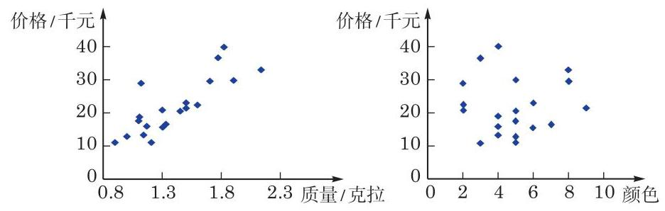
图 13-4-7 某宝石店的 20 颗钻石的价格分别与质量、颜色散点图
从图 13-4-7 中我们可以看出, 随着钻石质量的增加, 钻石的价格呈现逐渐上升的趋势, 但价格的增减随着颜色的变化却看不出明显的规律, 这说明价格和颜色之间可能不存在明显的关系.
我们在这一节讨论了频率分布直方图、茎叶图以及散点图. 在初中阶段我们还学习了条形图、扇形图以及折线图等. 在对数据进行分析和整理时, 应根据需要选择恰当的统计图. 散点图一般用于刻画成对的数据, 并且可以从图中看出成对数据之间是否存在某种关系. 茎叶图呈现了数据的所有信息, 但不适合数据量较大的情形. 当数据量较大时一般选用条形图或频率分布直方图, 它们能直观地反映数据分布的大致情况. 而如果想呈现每部分所占的比例, 则需要用到扇形图. 折线图则主要用于呈现数据随着时间变化的趋势.
调查你校本年级学生的每天平均户外活动时间和视力情况， 并用合适的统计图表呈现出来. 你能发现这两者之间有什么关系吗?
运用计算机中的电子表格办公软件可以绘制多种统计图表. 尽管不同版本的处理细节略有不同，但基本过程类似. 严格来说, 它们并不是统计软件, 但作为办公软件, 具有一定的统计计算功能，并且可以实施简单的数据统计、图表绘制等操作. 要做更复杂、更专业的统计工作，软件市场上有比较成熟的统计分析软件, 可供选用.
下面以表 13-2 的数据为例, 绘制散点图.
(1)在工作簿中输入身高和对应体重的两列或两行数据.
(2)选中这两列或两行数据，在“插入”菜单中选择所需要的图像类型——散点图；根据需要选择其中一种散点图的类型并单击(图 13-4-8)，一幅散点图即出现在工作簿中.
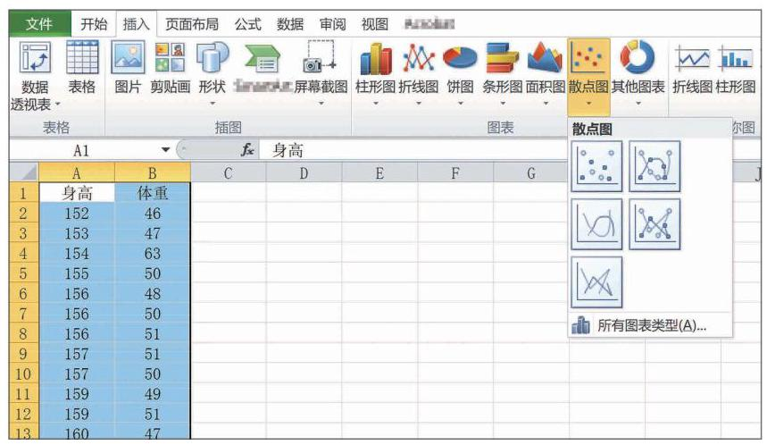
图 13-4-8
(3)根据需要选择坐标轴的范围以及单位长度等，使得统计图具有较好的可视性. 例如, 横坐标身高的范围可以取 [150,185), 纵坐标体重的范围可以取 [40,100), 修改后就得到了图 13-4-6.
| 气温/℃ | 海水表层温度/℃ | 气温/℃ | 海水表层温度/℃ |
| 13.9 | 9.4 | 31.1 | 28.3 |
| 15.0 | 10.6 | 31.1 | 26.7 |
| 18.3 | 13.3 | 28.9 | 25.0 |
| 23.9 | 18.9 | 23.9 | 22.2 |
| 27.2 | 21.7 | 20.0 | 15.6 |
| 30.0 | 25.6 | 15.0 | 10.0 |
A. 任意给定统计数据，都可以绘制散点图；
B. 从散点图中可以看出两个量是否具有一定的关系;
C. 从散点图中可以看出两个量的因果关系;
D. 从散点图中无法看出数据的分布情况.
| 胸径/cm | 6 | 7.9 | 8.3 | 8.9 | 10.1 | 12.1 | 13.8 | 14.2 |
| 树高/m | 4.7 | 5.3 | 6.1 | 7 | 7.5 | 8.5 | 7.8 | 8.1 |
| 胸径/cm | 16.4 | 16.9 | 18.1 | 20.1 | 21.8 | 22.2 | 23.9 | / |
| 树高/m | 9.1 | 9.8 | 10 | 10.3 | 11.3 | 11.8 | 12.7 | / |
绘制散点图, 并观察随着高度的增加, 栎树胸径的变化趋势.
(1)条形图； (2)散点图；
(3)折线图； (4)扇形图.
(1)制作频率分布表;
(2)绘制频率分布直方图和频率分布折线图.
| 分组 | 频数 | 频率 |
| 4 | 0.08 | |
| 11 | 0.22 | |
| 12 | 0.24 | |
| [3.56,4.06) | 16 | 0.32 |
(续表)
| 分组 | 频数 | 频率 |
| [4.06,4.56) | 3 | 0.06 |
| [4.56,5.06) | 3 | 0.06 |
| [5.06,5.56] | 1 | 0.02 |
绘制频率分布直方图及频率分布折线图如下:
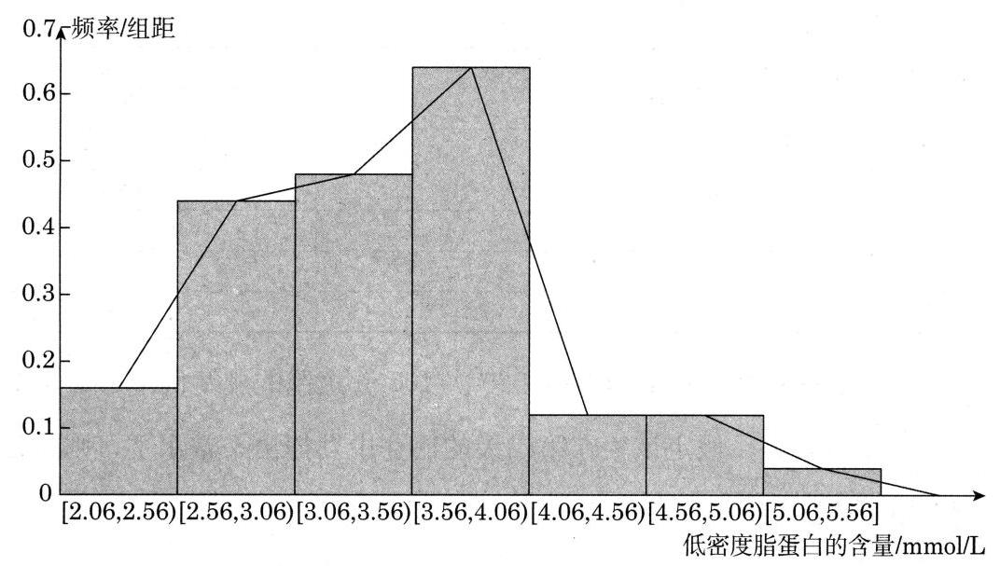
图 13-R4
| 年龄分组区间 | 患者人数 |
| 7 | |
| 35 | |
| 34 | |
| 46 | |
| 39 | |
| [50,60) | 30 |
| [60,70) | 12 |
| [70,80] | 3 |
| 合计 | 206 |
绘制频率分布直方图, 并分析龋齿病患者的年龄构成.
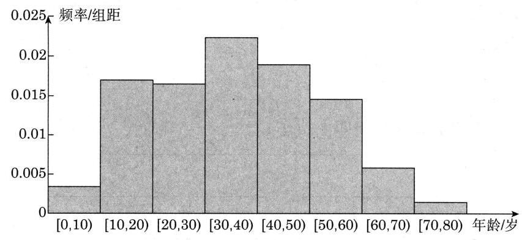
图 13-R5
从上图可以看出, 龋齿病患者较少发于 10 岁以下的儿童及 60 岁以上的老人,在 10 到 60 岁之间均易患病,在 30 到 40 岁之间患病率最高.
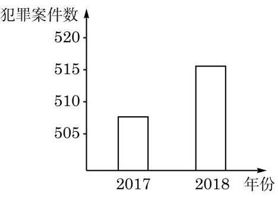
(第 1 题)
(1)描述你从该图中得到的信息;
(2)根据统计图的绘制要求，说明该图是否需要改进以及如何改进.